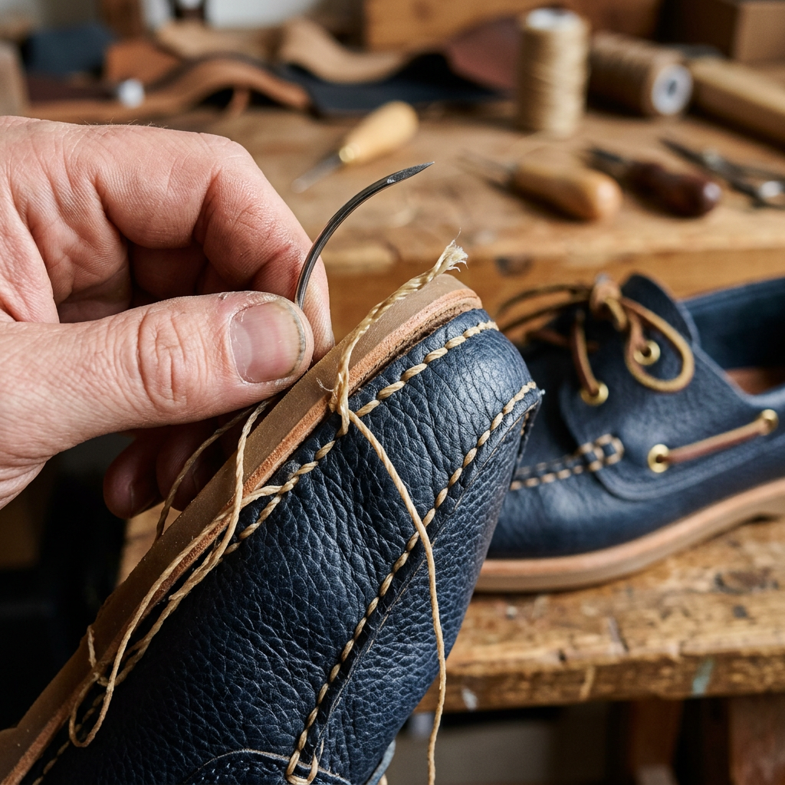

Mastering the Deck: The Definitive Guide to Choosing High-Performance Boat Shoes
The Invisible Danger on the Deck: Why Your Choice of Footwear Matters
Imagine this: You’re navigating a slick, salt-sprayed deck as the swell picks up. In a split second, your footing gives way. It’s not just an embarrassing slip; it’s a safety hazard that could have been prevented with the right equipment. For the serious mariner or the style-conscious enthusiast, boat shoes are far more than a fashion statement—they are a critical piece of performance gear.
However, the market is flooded with 'nautical-style' loafers that fall apart after one exposure to brine and offer zero traction on wet fiberglass. To the untrained eye, a cheap imitation looks like a classic. To your feet and your safety, the difference is night and day. This guide breaks down the science of the authentic boat shoe so you can invest in quality that lasts a lifetime.

The Anatomy of an Authentic Boat Shoe
To choose a high-conversion pair of shoes—meaning shoes that actually perform the job they were designed for—you must understand the engineering behind them. Authentic boat shoes, often called deck shoes, were birthed from a need for grip. Here is what separates a professional-grade shoe from a mall-brand imitation.
1. The Siped Outsole: The Secret to Friction
The most critical feature of any boat shoe is the sole. Look for 'siping'—a process of cutting thin, wave-like grooves into the rubber. Invented in the 1930s after observing a dog’s paws, these grooves open up as you walk, dispersing water and creating a vacuum-like grip on wet surfaces. A flat, smooth sole is a liability; a siped, non-marking rubber sole is a necessity.
2. 360-Degree Lacing Systems
Unlike standard sneakers where laces are purely cosmetic or localized to the tongue, a true boat shoe features a functional 360-degree lacing system. The leather lace travels around the heel and through brass eyelets, allowing you to cinch the entire shoe tight against your foot. This ensures that even if the shoe gets wet and heavy, it stays securely on your foot rather than sliding off.
3. Hand-Sewn Tru-Moc Construction
Quality boat shoes are crafted using 'Moc-toe' construction. This means a single piece of leather wraps around the bottom of the foot to form the sides and the insole, which is then hand-stitched to the top 'plug.' This creates a glove-like fit that conforms to your foot over time, providing unparalleled comfort during long hours on the water.
Material Science: Leather vs. Salt Water
Salt water is the enemy of cheap leather. It draws out moisture, causing the material to crack and rot. High-end boat shoes utilize oil-tanned leathers or pull-up leathers that are heavily infused with waxes and oils during the tanning process. This makes the leather hydrophobic—water beads off the surface rather than soaking in.
Furthermore, look for corrosive-resistant eyelets. Genuine brass or treated aluminum eyelets are mandatory to prevent the unsightly green oxidation that occurs when inferior metals meet salt air.

Style Psychology: Beyond the Boat
While performance is the primary driver for the high-intent buyer, the aesthetic versatility of the boat shoe is what has maintained its status as a wardrobe staple for decades. The boat shoe occupies the 'Goldilocks zone' of footwear: more sophisticated than a sneaker, but more relaxed than a formal loafer.
- The Casual Mariner: Pair your shoes with linen shorts and a breathable polo for a look that signals competence and relaxed authority.
- The Coastal Professional: Dark brown or navy leather boat shoes paired with tailored chinos and a button-down shirt transition seamlessly from the office to the evening sail.
- Sockless Culture: Historically and functionally, boat shoes are designed to be worn without socks. The interior should be unlined or lined with soft leather to prevent chafing and allow for quick drying.
Maintenance: How to Make Your Investment Last
A high-quality pair of boat shoes shouldn't be replaced every season. With proper care, they should develop a beautiful patina over years of use. Follow these three rules:
- Rinse After Salt Exposure: If you take a wave over the bow, rinse your shoes with fresh water as soon as you hit the dock to remove salt crystals.
- Air Dry Only: Never place leather boat shoes near a heater or in direct sunlight to dry. This will cause the leather to become brittle. Let them air dry at room temperature.
- Condition Regularly: Use a high-quality leather cream or mink oil to replenish the oils lost during wet-dry cycles.
The Final Verdict: Quality is the Only Metric
When you are buying boat shoes, you aren't just buying footwear; you are buying stability, heritage, and durability. Do not be swayed by low-cost alternatives that sacrifice the siped sole or the 360-degree lacing system. Look for genuine hand-sewn construction and oil-tanned leathers. Whether you are actually manning a helm or simply enjoying the coastal lifestyle, the right pair of shoes provides the foundation for your entire experience. Choose craftsmanship over convenience, and your feet will thank you for years to come.